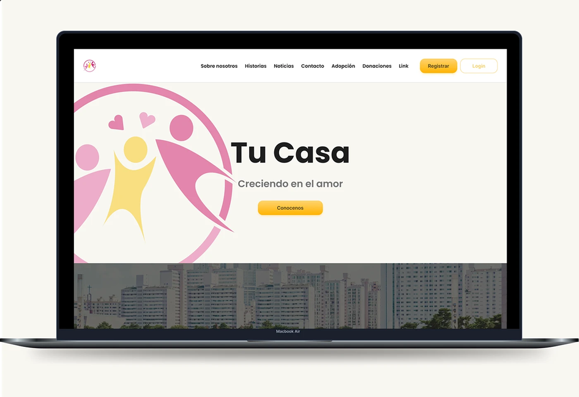
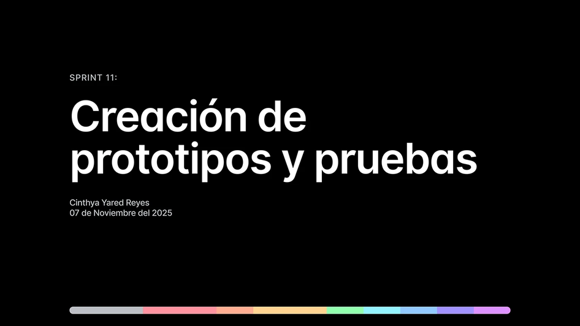
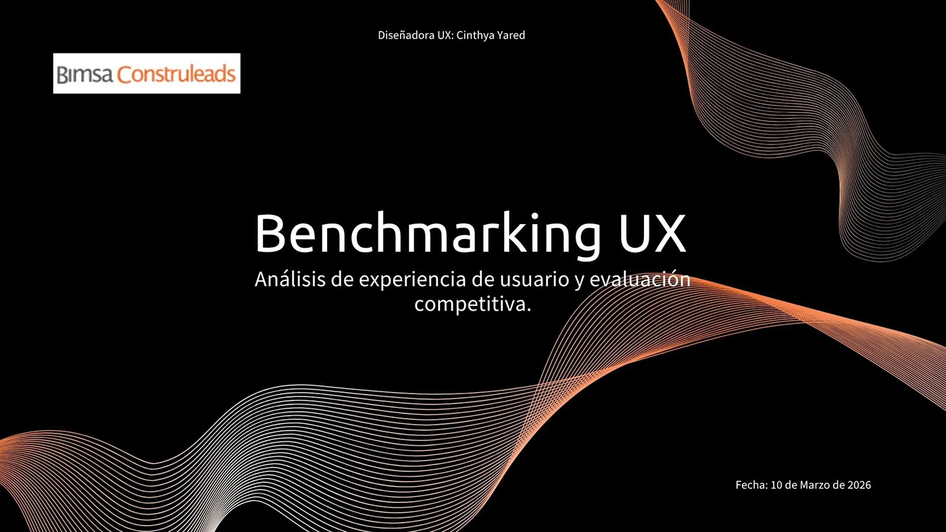

Lux de Jesus
App educativa de fe: diseño UX/UI desde la investigación hasta el prototipo.
Ver casoPortafolio
Investigación, benchmarking, pruebas de usabilidad y diseño de interfaces; me gusta seguir experimentando.
App educativa de fe: diseño UX/UI desde la investigación hasta el prototipo.
Ver caso
Investigación UX sobre la experiencia de la plataforma: hallazgos y oportunidades.
Ver caso
Rediseño de un producto digital priorizando lo esencial a través de un MVP.
Ver en Behance (se abre en una pestaña nueva)
Pruebas de usabilidad y prototipo para una plataforma de votación.
Ver en Behance (se abre en una pestaña nueva)
Análisis comparativo de competidores para detectar patrones y oportunidades.
Ver en Behance (se abre en una pestaña nueva)
Recopilación de proyectos y procesos de diseño UX/UI de 2025.
Ver en Behance (se abre en una pestaña nueva)¿Te gustó lo que viste?